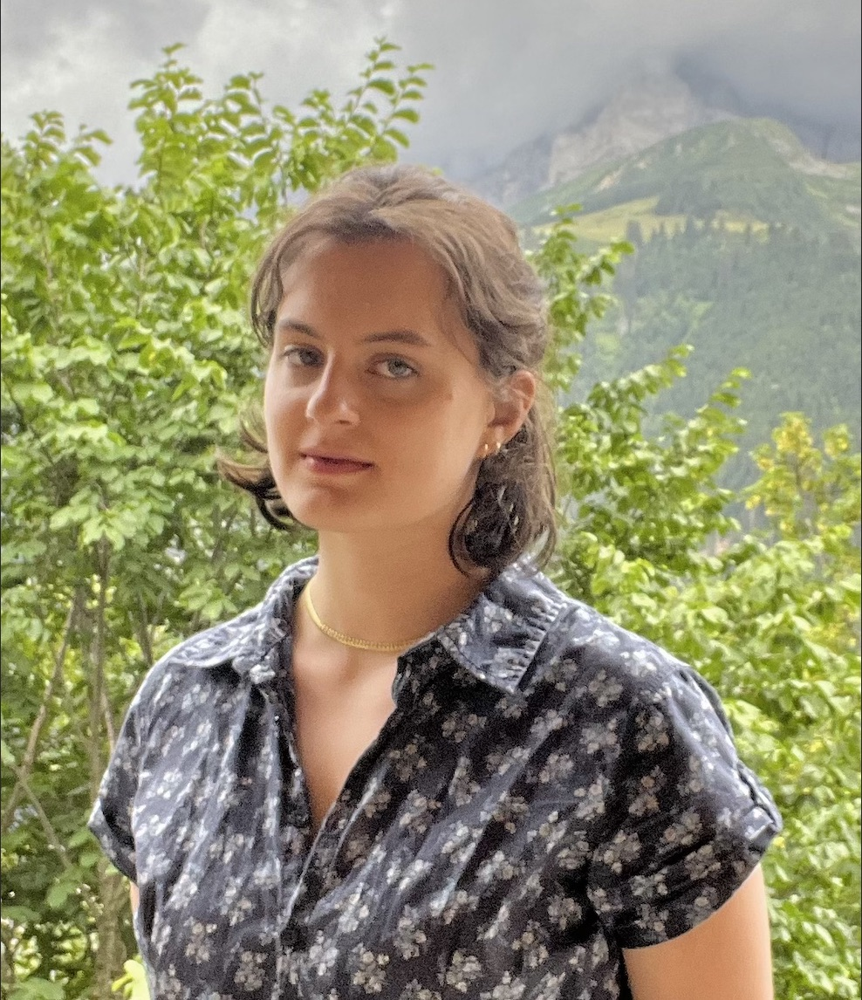

Contact
Office: LCB 317
E-mail: fayolle[at]math[dot]utah[dot]edu
About me
I am a fourth year PhD candidate at the University of Utah working with Karl Schwede. My work is supported by an NSERC doctoral scholarship. I am broadly interested in commutative algebra and algebraic geometry, especially singularity theory in positive and mixed characteristics.
Before coming to Utah, I was at the EPFL and at Mcgill. You can find a copy of my CV here.